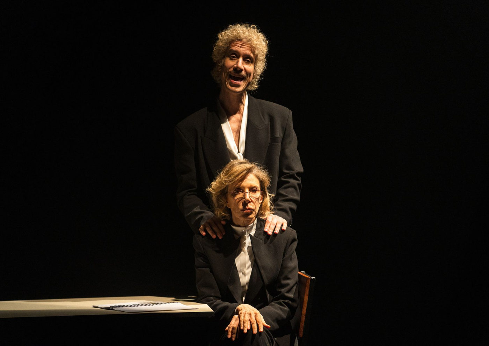

Marília Gabriela retorna aos palcos com o espetáculo “A Última Entrevista” em curta temporada no Teatro Porto

Peça estrelada por Marília Gabriela e Theodoro Cochrane reestreia em São Paulo após sucesso em seis cidades brasileiras. Temporada vai de 20 de junho a 27 de julho de 2025
Depois de emocionar plateias por onde passou, o espetáculo "A Última Entrevista de Marília Gabriela" volta a São Paulo para uma curta temporada no Teatro Porto, de 20 de junho a 27 de julho de 2025, com sessões às sextas e sábados, às 20h, e domingos, às 17h. A montagem, que já percorreu cidades como Rio de Janeiro, Porto Alegre, Brasília e Belo Horizonte, foi assistida por mais de 32 mil pessoas e promete repetir o sucesso na capital paulista.
O texto, assinado por Michelle Ferreira, tem direção de Bruno Guida e marca o reencontro de Marília Gabriela com os palcos — e com seu filho, o ator Theodoro Cochrane, que divide a cena com ela. A venda de ingressos está disponível pelo site www.sympla.com.br/teatroporto e na bilheteria do teatro.
Uma última entrevista... com direito a perguntas difíceis
Na trama, Marília Gabriela assume o papel de entrevistada em um programa ao vivo — e quem conduz a entrevista é seu próprio filho, em uma troca ficcional com toques de realidade. O encontro inusitado se transforma num jogo cênico afiado sobre relações familiares, ego, conflitos de geração e o papel da mulher na sociedade.
Com linguagem metateatral e interação direta com a plateia, o espetáculo convida o público a refletir sobre temas como feminismo, etarismo, maternidade e a fronteira entre o público e o privado — tudo com uma dose de humor e emoção que já virou marca da montagem. E sim: há até espaço para o famoso “bate-bola” que eternizou o nome de Gabi na televisão.
SERVIÇO | A ÚLTIMA ENTREVISTA DE MARÍLIA GABRIELA
📅 Temporada: 20 de junho a 27 de julho de 2025
🗓 Sessões: Sextas e sábados, às 20h | Domingos, às 17h
📍 Local: Teatro Porto — Al. Barão de Piracicaba, 740 – Campos Elíseos – São Paulo/SP
📞 Informações: (11) 3366-8700
🎟 Ingressos:
Plateia: R$ 200 (inteira) | R$ 100 (meia)
Balcão e frisa: R$ 150 (inteira) | R$ 75 (meia)
🔗 Venda online: www.sympla.com.br/teatroporto
🕒 Duração: 80 minutos
👤 Classificação indicativa: 14 anos
👧 Menores de 6 a 14 anos apenas acompanhados por pais ou responsáveis legais
🚫 Proibida a entrada de menores de 6 anos